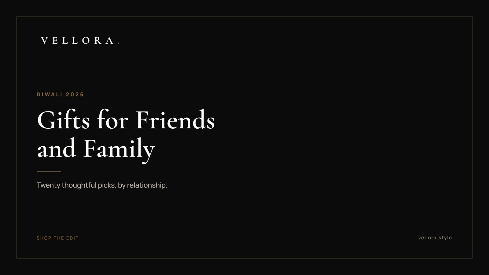

THE DIWALI EDIT
Diwali Gift Ideas for Friends and Family: 20 Thoughtful Picks
By Vansh Shah, Founder

- Choose by relationship first. A brother, a mother-in-law and a best friend want very different things.
- One good piece per person reads as more thoughtful than a pile of small gifts.
- Bags are the safest choice when you are unsure. They need no size and suit most wardrobes.
- Watches suit parents, partners and anyone who wears one daily. Sneakers need a known size.
- Return gifts for guests should be small, useful and the same for everyone.
Good Diwali gift ideas for friends and family have one thing in common. They suit the person on an ordinary day, not only during the festival. The best Diwali gift ideas for friends are the ones that get worn, carried or used every week after the lamps are packed away.
Below are 20 picks, grouped by relationship: friends, family, parents and partners. We name the pieces we carry and mark the rest as generic styles. Use these Diwali gift ideas for friends as a starting point, then adjust for taste. And because Diwali gift ideas for friends often run into a crowded week of visits, we close with a short section on return gifts for the guests who come to your home.
How we picked these 20
We kept the list short on purpose. Each pick had to pass three quiet tests. Would the person use it in a normal week? Does it suit a range of wardrobes? Will it still look right next Diwali?
Where we name a brand, it is only to say what the piece is. Where a pick is a generic style, we say so, and you can find a version anywhere. Browse the Vellora bag edit or the watch edit as you read.
Diwali gift ideas for friends
Friends are where you can take a small risk on taste. You know their wardrobe. You know what they would never buy for themselves.
1. A heritage flap bag for the friend with classic taste
The Gucci GG Web Stripe Flap Bag is beige with the web stripe. It suits a friend who likes a recognizable pattern used sparingly, on a compact shape.

2. A slim shoulder bag in her color
The Kate Spade Slim Shoulder Bag comes in monogram, white, pink, olive, tan, brown, magenta and black. If you know her color, this is an easy win. If you do not, tan or black is safe.
3. Leather sneakers for the friend who lives in them
The LV Trainer Sneaker in Blue (1AJTQK) is a low-top that works with denim, chinos and a festive kurta. Confirm the size before you buy.
4. A first proper watch
The Seiko Prospex Circuit Race Solar (SSC941P1) runs on light, so it keeps going without a battery swap. It suits a friend who has never owned a serious watch and wants something sporty.
5. A party bag for the friend who goes to every party
The Gucci Ivory Quilted Round Chain Bag is small, round and light in color. It sits well with festive outfits and holds the essentials for a long night of visits.
Diwali gift ideas for family
Family gifting carries more history. These five cover siblings, in-laws, younger cousins and grandparents. They are the Diwali gift ideas for family members we come back to most often.
6. A solar sports watch for your brother
The Seiko Prospex Speedtimer Go Large Solar (SSC915P1) is a larger, sporty watch that runs on light. It suits a brother who wants something bold on the wrist without the fuss of a battery change.
7. A top-handle bag for your sister
The Jacquemus Flap Handbag comes in pink, red, brown and ivory. Pink or red suits the festival. Brown and ivory suit the rest of the year.

8. A shoulder hobo for your sister-in-law
The Kate Spade Shoulder Hobo Bag in red has a soft, curved shape that sits close to the body. Red is a quiet nod to the season.
9. A flap bag for a younger cousin
The Kate Spade Textured Flap Bag comes in red, white and black. It is structured and easy to carry, a good first bag for a cousin who has just started working.
10. A framed family photograph for your grandparents
A generic style, and often the most loved. Choose one good photograph from the year and frame it in solid wood or brass. Keep the frame plain and let the picture do the work.
Diwali gift ideas for parents
Parents usually say they want nothing. Most of them mean it, and most of them still enjoy a piece they will use every day. These Diwali gift ideas for parents lean toward watches and bags that age well.
11. A slim dress watch for your father
The 1908, reference 52508, is 39 mm in 18 ct yellow gold with a polished finish. It suits a father who prefers a classic watch that slips under a shirt cuff.
12. A soft shoulder bag for your mother
The Louis Vuitton CarryAll PM (M47180) is a soft shoulder bag with room for a full day. It suits a mother who wants one bag for errands, temple visits and family dinners.
13. A gold day-date watch for your father-in-law
The Day-Date 40, reference 228238, is an Oyster case, 40 mm, in yellow gold. As the name says, it shows the day and the date. It suits a father-in-law who wears one watch for everything.
14. A structured tote for your mother-in-law
The Louis Vuitton OnTheGo PM (M46373) is the smaller OnTheGo, a tote that holds its shape. It suits a mother-in-law who likes a tidy bag that still carries the essentials.
15. A leather travel set for the trip they keep postponing
A generic style. Two passport holders and a pair of luggage tags in matching leather make a quiet suggestion. Keep the color neutral and the initials small.
Diwali gift ideas for partners
A partner gift is the most personal on this list. It should look like something they chose for themselves. If you are buying for a wife ahead of Karwa Chauth on Thursday 29 October, our Karwa Chauth gift guide for your wife covers handbags in more depth.
16. A statement shoulder bag for your girlfriend
The Louis Vuitton LV x TM Side Trunk MM (M14046) is a trunk-shaped shoulder bag with more character than most. It suits a girlfriend whose taste runs playful. Of the Diwali gift ideas for girlfriend gifting on this list, it is the boldest.
17. A compact shoulder bag for evenings
The Gucci Small Horsebit Shoulder Bag comes in beige monogram and pink. It is small enough for a dinner and dresses up a festive outfit without effort.
18. Sneakers in a deeper blue for your boyfriend
The LV Trainer Sneaker in Marine is a darker colorway that suits a boyfriend who already owns white sneakers. Sneakers are among the easier Diwali gift ideas for boyfriend gifting, as long as you know his size.
19. A GMT watch for the partner who travels
The GMT-Master II, reference 126710GRNR, is an Oyster case, 40 mm, in Oystersteel. A GMT watch adds a hand that tracks a second time zone on a 24-hour scale, which suits a partner who works across cities or calls family abroad.
20. A watch he would not buy himself
A generic idea for a husband. Most men put off buying a good watch for years. Choose a style that fits his week: a slim dress watch for an office wardrobe, a steel sports watch for an active one.
When the family list is long
Large families make Diwali gifting harder than it needs to be. A few habits keep it calm:
- Give per household, not per person, for extended family. One shared object for a home reads as generous.
- Save the personal pieces for the closest circle: parents, siblings, a partner.
- Keep a short note of what you gave last year. It saves you from repeating yourself.
- Match the tone across siblings. If one gets a watch, the other should get something of similar weight, even in a different category.
None of this needs a spreadsheet. A single page of names, with one idea against each, is usually enough to stop the last-minute rush.
A quick guide by relationship
If you have a list of names and little time, start here.
| Relationship | Category to consider | A piece we carry | Why it suits |
|---|---|---|---|
| Best friend | Compact bag | Gucci GG Web Stripe Flap Bag | Recognizable pattern, small shape |
| Friend with sneaker habit | Leather sneakers | LV Trainer Sneaker in Blue | Works with denim and kurtas |
| Brother | Solar sports watch | Seiko Prospex Speedtimer Go Large Solar | Runs on light, bold on the wrist |
| Sister | Top-handle bag | Jacquemus Flap Handbag | Festive colors, structured shape |
| Father | Slim dress watch | The 1908 | Classic, sits under a cuff |
| Mother | Soft shoulder bag | Louis Vuitton CarryAll PM | Room for a full day |
| Girlfriend | Statement bag | Louis Vuitton LV x TM Side Trunk MM | Playful shape, still wearable |
| Partner who travels | GMT watch | GMT-Master II | Reads a second time zone |
Diwali return gift ideas for guests
Return gifts are a different job. They go to everyone who visits, so they should be small, useful and the same for each guest. Nobody should compare boxes at the door. The best Diwali return gift ideas are simple things people actually keep.
Generic styles that work well:
- A pair of small brass diyas, ready for next year
- A sealed tin of dry fruits or dates
- A hand-poured candle in a plain glass jar
- A cotton tote, useful long after the festival
- A pocket notebook with a cloth cover
- A small leather keyring in a neutral tone
A few notes on return gifts:
- Buy one design in a single color. It looks deliberate and avoids awkward choices.
- Pack them in matching bags by the door before the first guest arrives.
- For a close friend who hosted you during the week, skip the return gift box and send a proper thank-you piece later.
Most Diwali return gift ideas fail because they try to impress. A guest carries the box home in one hand, often after several visits. Light and useful wins.
A note on timing
Diwali falls on Sunday 8 November 2026, with Dhanteras on Friday 6 November. Bhai Dooj follows two days after Diwali, so confirm the date for your city. If a sibling gift is on your list, plan it alongside your Diwali shopping rather than after.
We suggest shortlisting in the third week of October and buying before the month ends. That leaves time for a size or color change. Browse the full Vellora edit when you are ready. We, the Vellora team, hope each of these lands with the right person.